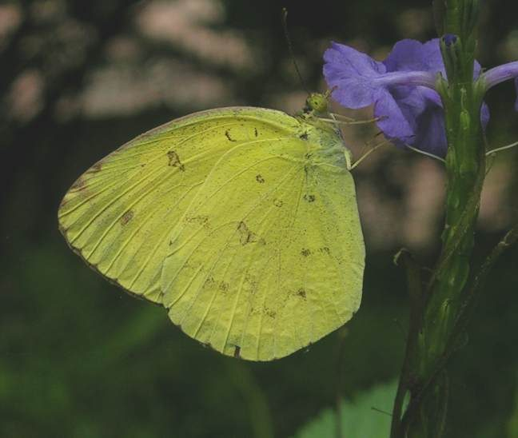

घास पीतवर्णीCommon Grass Yellow
Eurema hecabe · Pieridae · INS-0046

- Scientific name
- Eurema hecabe (Linnaeus, 1758)
- Family
- Pieridae
- Hindi
- घास पीतवर्णी
- Status here
- native
- IUCN
- not evaluated
When to look कब देखें
Present all year.
घास पीतवर्णी / Common Grass Yellow
Eurema hecabe (Linnaeus, 1758) — Pieridae
घास पीतवर्णी (कॉमन ग्रास येलो / पीली तितली) — पूर्वी उत्तर प्रदेश के घास के मैदानों, उद्यानों, खेतों की मेड़ों और सड़कों के किनारे पाया जाने वाला एक अत्यंत छोटा, प्रचुर मात्रा में मिलने वाला और चमकीला पीला तितली है। यह इस क्षेत्र की सबसे आम पीली तितली है। इसकी पहचान इसके चमकीले पीले रंग के पंख जिन पर काले रंग के बाहरी किनारे (bright yellow wings with black borders) होते हैं, से होती है। यह हमेशा जमीन के बिल्कुल नजदीक, घास के ऊपर धीमी और फड़फड़ाती हुई उड़ान (flies low, close to the ground) भरती है। इस प्रजाति में मौसम के अनुसार रूप-परिवर्तन (seasonal variation) देखा जाता है; वर्षा ऋतु (wet season) के रूप में पंखों के काले किनारे अधिक चौड़े और स्पष्ट होते हैं, जबकि शुष्क ऋतु (dry season) में काले किनारे संकरे होते हैं और पंखों के नीचे भूरे रंग के महीन धब्बे होते हैं। इसकी इल्ली अमलतास और अन्य फलीदार पौधों की पत्तियों को खाती है।
Quick Identification त्वरित पहचान
| Feature | Description |
|---|---|
| Wingspan | Small butterfly; wingspan around 35–45 mm |
| Colouration | Dorsal side is bright sulphur-yellow; outer margins of both wings have a bold black border |
| Season (Wet) | Bold, wide black border on forewing, deeply scalloped in the middle |
| Season (Dry) | Narrower black border on wings; ventral side has fine brown speckles mimicking dry leaves |
| Flight | Low, weak, fluttering flight; stays within 1 meter of the grass canopy |
Field tip: Walk through open grassy areas on a sunny winter morning. Watch for tiny yellow butterflies fluttering low over the grass, landing frequently on small weeds to feed on nectar. The female is slightly paler yellow than the male and is shown in the field tip.
Morphology आकारिकी
Biometrics (typical measurements of adults in the northern Indian plains showing seasonal variation):
| Stage / Part | Measurement |
|---|---|
| Adult wingspan | 35–45 mm |
| Body length (adult) | 12–15 mm |
| Mature caterpillar length | 25–28 mm |
| Egg length | 1.0–1.2 mm |
| Chrysalis (pupa) length | 18–20 mm |
| Weight (adult) | 30–50 mg |
Adult Butterfly:
- Dorsal side: Sulphur-yellow base. The forewing has a broad black border from the apex to the tornus, with a deep indentation (scallop) near the center. The hindwing has a narrow black outer margin.
- Ventral side: Paler yellow. In the wet-season form, it has a few small brown rings and spots. In the dry-season form, it is covered with fine, dark brown speckles, providing excellent camouflage when it rests among dry grass.
Egg: Small, spindle-shaped, white, laid singly on the shoots or young leaves of host plants.
Larval (Caterpillar) Stage
The caterpillar passes through five instars, matching the color of its host leaves.
- Mature caterpillar: Measures 25–28 mm. The body is long, cylindrical, grass-green, covered with fine white hairs. A distinct, thin, white longitudinal stripe runs along each side of the body. The head is green.
- Chrysalis (pupa): Compressed, leaf-like, green (sometimes brown), attached to twigs by a tail pad and a silk girdle, with a pointed snout.
Behaviour & Ecology व्यवहार और पारिस्थितिकी
- Seasonal Polyphenism: Displays marked seasonal variation (seasonal forms). During the hot, wet monsoon months, it develops wide black borders to absorb heat or display strong sexual signals. In the dry, cool winter, it reduces the black borders and develops brown ventral speckling, allowing it to blend in with dry leaves when resting during cold nights.
- Low-flying habit: It rarely flies high, spending its life within the grass layer. It feeds on nectar from small ground weeds (like Tridax Daisy Tridax procembens) and searches for low-growing host weeds.
- Mud-puddling: Groups of males are occasionally seen mud-puddling on wet sand near riverbanks, absorbing minerals.
Life Cycle / Phenology जीवन चक्र
- Reproduction: Multivoltine (breeds year-round in UP with 7 to 9 generations).
- Developmental times (at 28–32°C):
- Egg stage: 3 to 4 days.
- Caterpillar stage: 12 to 15 days, feeding on leaves.
- Pupa stage: 6 to 8 days.
- Adult lifespan: 10 to 15 days.
Host Plants or Prey आहार
Primary larval host plants (Fabaceae/Leguminosae):
- Trees: Amaltas (Cassia fistula) and Subabul (Leucaena leucocephala).
- Herbs & Crops: Sesbania (Sesbania bispinosa), wild cassia weeds, and sensitive plant (Mimosa pudica).
Adult food source:
- Nectar from small ground flowers, including Tridax Daisy (Tridax procumbens), ageratum, and clover.
Predators / Natural Enemies शत्रु
- Predators: Orb-weaver spiders, green lynx spiders, dragonflies, and garden lizards.
- Parasitoids: Chalcid wasps parasitize the pupae, and braconid wasps target the caterpillars.
Agricultural / Human Relevance कृषि प्रासंगिकता
Pollinator of wild weeds. As an abundant insect, the Common Grass Yellow is an important pollinator of wild ground cover and weeds in pastures. It is not considered a pest of agricultural crops, although caterpillars can feed on young Sesbania leaves.
Conservation and legal status: Protected under Schedule IV of the Wildlife Protection Act, 1972. It is highly common and secure state-wide, showing high tolerance to urban parks and human gardens.
Expected Locally स्थानीय रूप से अपेक्षित
Not a field record. Written from published accounts for eastern Uttar Pradesh. No confirmed local sighting yet — if you have seen it, that is what the atlas needs.
अभी तक स्थानीय पुष्टि नहीं। यह विवरण प्रकाशित स्रोतों से है, किसी अवलोकन से नहीं।
A very common resident throughout the Basti district. They can be found in almost every open pasture, home garden, roadside grass patch, and agricultural field margin in the Harraiya, Vikramjot, and Basti blocks. They are frequently seen mud-puddling near water pumps in rural areas.
Distribution वितरण
Global range: Widespread across Africa, South Asia, East Asia, and Australia.
In India: A common resident throughout the entire country, from the plains to high elevations.
In Uttar Pradesh: Abundant state-wide in all ecological zones.
In Basti district / eastern UP: Regularly recorded year-round in all blocks.
Research Questions शोध प्रश्न
Anyone can investigate these | कोई भी इन प्रश्नों की जाँच कर सकता है
- How many seconds does a Common Grass Yellow spend feeding on a single Tridax Daisy flower before flying to the next? — Record foraging times.
- What is the ratio of wet-season forms to dry-season forms in your block during October? / आपके ब्लॉक में अक्टूबर के दौरान घास पीतवर्णी के वर्षा-ऋतु और शुष्क-ऋतु के रूपों का अनुपात क्या है? — Conduct weekly field counts.
- Do caterpillars of the Common Grass Yellow feed more on Amaltas leaves or Subabul leaves in your garden? — Conduct choice tests.
- How do Grass Yellows respond when approached by a hunting dragonfly? — Document flight reactions.
- Does the presence of chemical weedicides along field margins reduce the count of Grass Yellow butterflies? / क्या खेतों के किनारों पर रासायनिक खरपतवारनाशकों के छिड़काव से घास पीतवर्णी तितली की संख्या कम हो जाती है? — Compare counts in sprayed and unsprayed field borders.
Similar Species मिलती-जुलती प्रजातियाँ
| Species | How to tell apart | हिंदी |
|---|---|---|
| Small Grass Yellow (Eurema brigitta) | Border on hindwing is broader; forewing lacks the deep central indentation (scallop) | छोटा पीला — चौड़ा किनारा, पूँछ के पास गहरा मोड़ नहीं |
| Three-spot Grass Yellow (Eurema blanda) | Forewing has three small spots under the wing (Common Grass Yellow has only two); larger | तीन-चित्ती पीला — पंख के नीचे तीन धब्बे |
| Common Mormon (Papilio polytes) | Much larger; black with white/red spots; strong flight; feeds on citrus | सामान्य मॉर्मन — बहुत बड़ा, काला-लाल रंग, लंबी पूँछ |
Field rule: Small, sulphur-yellow butterfly with black outer margins on its wings, flying very low over grass and weeds, is the Common Grass Yellow.
Taxonomy & Classification वर्गीकरण
Original description. Carl Linnaeus described the Common Grass Yellow as Papilio hecabe in 1758 in his Systema Naturae (ed. 10, vol. 1, p. 470). The type locality was Asia. Hübner placed it in the genus Eurema in 1819. The genus name Eurema is derived from the Greek eurema (invention/discovery). The specific name hecabe refers to Hecuba, a queen in Greek mythology.
Subspecies. Widespread subspecies are recognized. The nominate form in South Asia is:
| Subspecies | Authority | Range | Notes |
|---|---|---|---|
| E. h. hecabe | (Linnaeus, 1758) | India, Nepal, Southeast Asia | UP subspecies; nominate form; displays broad seasonal polyphenism |
Family and order placement. Placed in the order Lepidoptera, superfamily Papilionoidea, family Pieridae (whites and yellows), subfamily Coliadinae.
Phylogenetic notes. Eurema hecabe belongs to a complex of grass yellow species, characterized by high genetic diversity and complex environmental responses (polyphenism).
IUCN status rationale. Not evaluated (NE) by the IUCN Red List. It has a massive range and stable global population.
Photo Gallery फोटो गैलरी
References संदर्भ
- Linnaeus, C. (1758). Systema Naturae. Tenth Edition. Holmiae, p. 470. [original description]
- Kehimkar, I. (2016). Butterflies of India. Bombay Natural History Society, Mumbai.
- Kunte, K. (2000). Butterflies of Peninsular India. Universities Press, Hyderabad.
- Yata, O. (1989). A Revision of the Old World Species of the Genus Eurema. Bulletin of the Kitakyushu Museum of Natural History.
- Butterflies of India Database (2024). Eurema hecabe species page.
- GBIF Occurrence Data — Eurema hecabe, Uttar Pradesh (2010–2025).
Source file: species/fauna/insects/common_grass_yellow.md